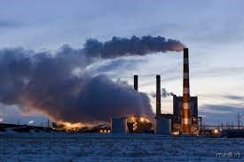

Gases do Efeito Estufa
Os gases do efeito estufa, tem propriedades bem definidas, eles são transparentes e permitem a passagem da radiação do sol através de luz, mas são retentores da radiação térmica. Os principais gases são: Dióxido de Carbono: sendo o gás de maior abundância na atmosfera. A queima dos combustíveis fósseis é uma das principais atividades responsáveis por emitir esse gás. Relata-se que desde a era industrial, a queima de dióxido de carbono na atmosfera aumentou 35%. Gás metano: É o segundo gás que contribuiu para o aumento das temperaturas globais, com poder 21% maior que o dióxido de carbono. Estima-se que aproximadamente 60% da emissão do metano provém de ações humanas ligadas a aterros sanitários e lixões, eliminado também por meio da digestão de ruminantes. Gases fluoretanos: São gases produzidos pelo homem com a finalidade de atender as necessidades industriais. Exemplos desse gases são os hidrofluocarbonetos, usados nos sistemas de aquecimento e refrigeração, hexafluoreto de enxofre, utilizado na indústria eletrônica; perfluocarbono, emitido na produção de alumínio e os clofluocarbonos (CFCs), responsáveis pela destruição da camada de ozônio. Vapor d´água: Com uma predominância grande na atmosfera sendo responsável por mais da metade do efeito estufa. O vapor d´´agua capta o calor irradiado pela superfície terrestre, e distribui para todas as direções aquecendo a superfície.